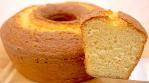

<h1> bolo simples
<p> receita
  

<ul> lista da areceita
<li> 2 xícaras (chá) de açúcar
<li> 3 xícaras (chá) de farinha de trigo
<li> 4 colheres (sopa) de margarina
<li> 3 ovos
<li> 1 e 1/2 xícara (chá) de leite
<li>1 colher (sopa) bem cheia de fermento em pó
